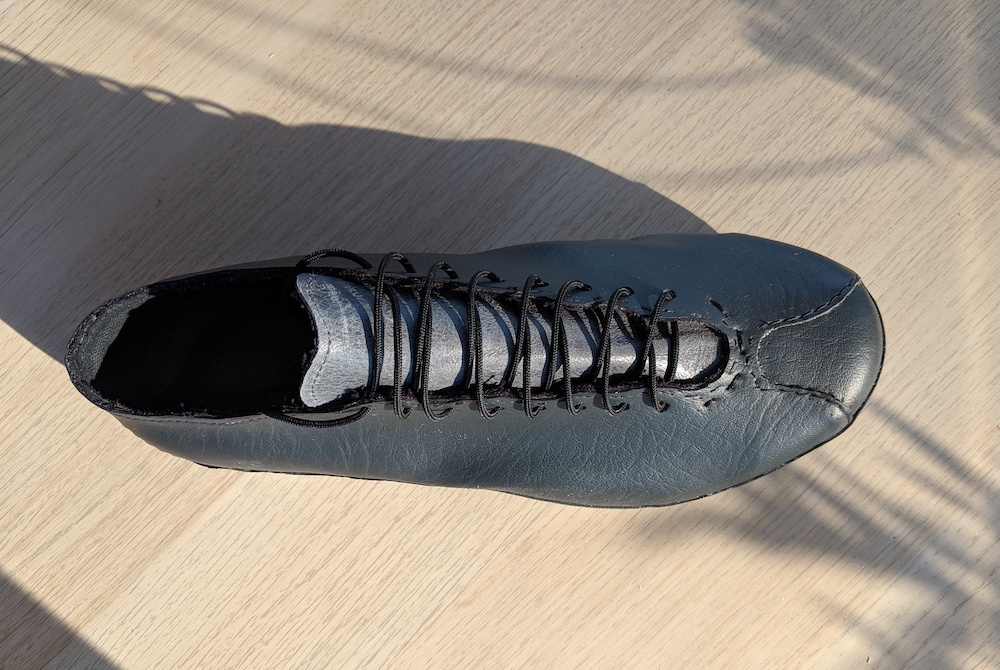
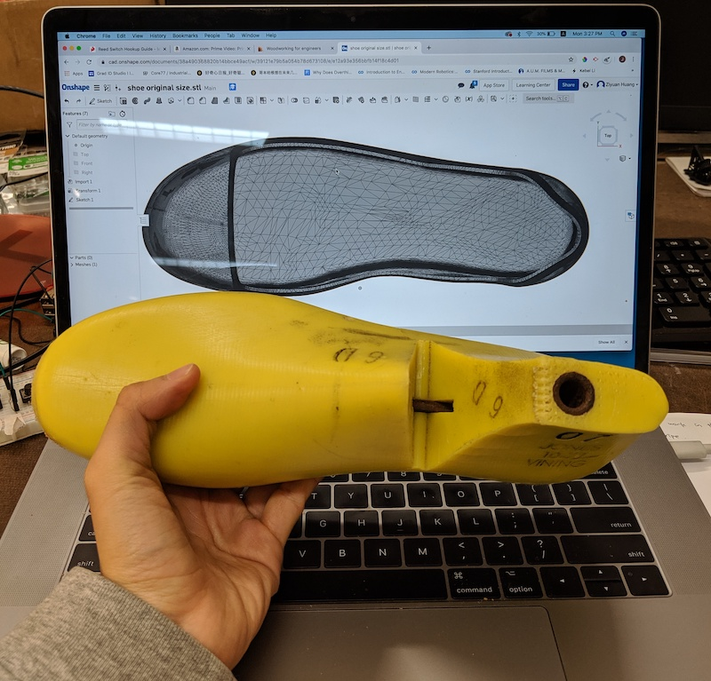
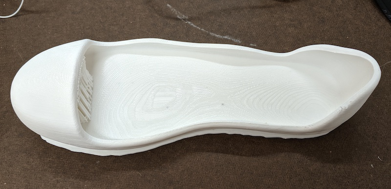
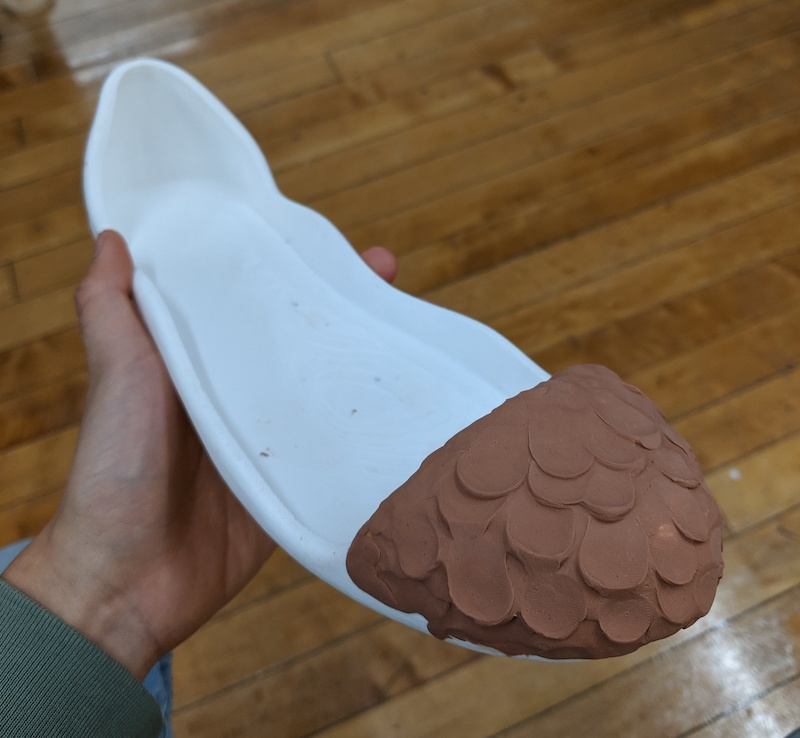
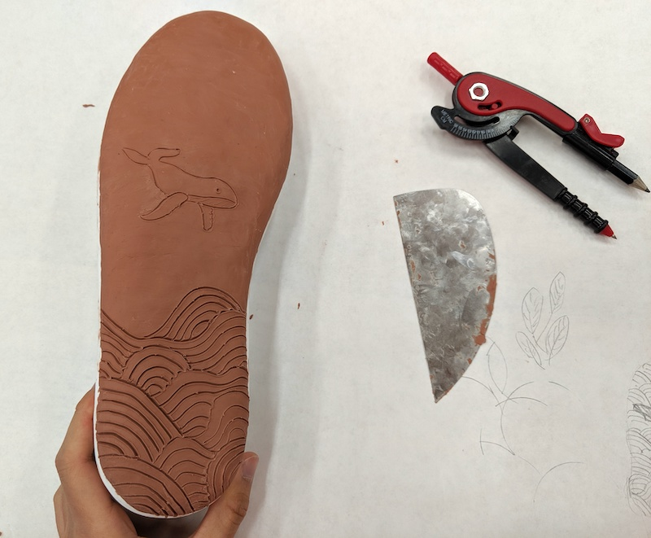
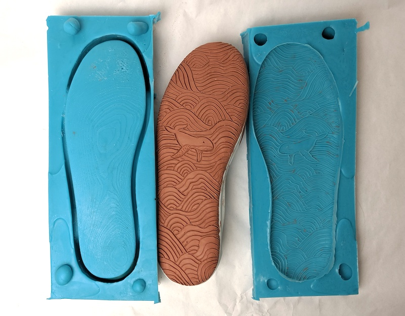
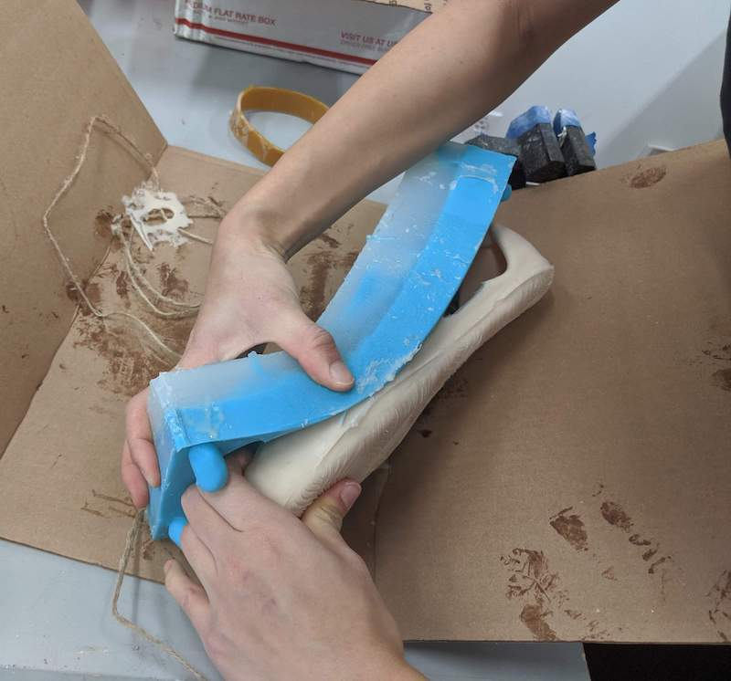
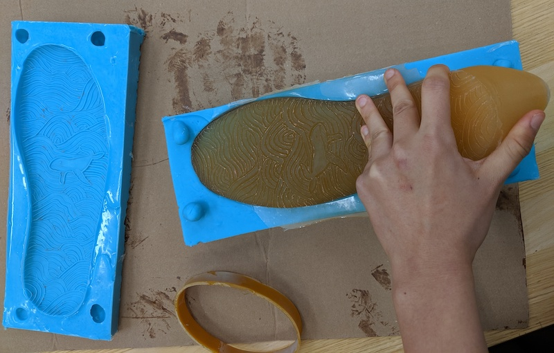

I took a shoemaking class at risd. This is the first shoe that I designed and made.

When I made this shoe, I got a slightly headache everytime I used the shoe glue, contact cement. Making this shoe makes me reflect on the process of shoemaking.
Contact cement is the most common glue used in the shoe industry nowadays. It's incredibly strong, but super toxic. It's very not healthy for the shoe factory workers and not good for the wearers in the long term.
Besides that, because the shoe parts are permentantly glued together, it's difficult to replace and repair parts when one part run out.
According to the U.S. Department of the Interior, Americans throw away at least 300 million pairs of shoes each year. Chemicals and fossil fuels are produced and leaked into the environment during the first and last steps in the shoe life cycle.
This research brought me to the idea of designing a pair of glueless shoes that are comfortable to wear, durable and easy to repair and replace parts.
This project is still a work in progress.
Making Process
I first modeled and 3d printed a plastic shoe sole based on the size of my shoe last. Toe springs, inner arch support and heel support are considered.


I put some clay on the 3d print to carve out details. I experimented some effects here.


After getting the cast piece, I poured silicone rubber on it to get the two-piece mold.

I chose urethane rubber (smoothon pmc-770) as the sole material, which has an ideal hardness of shoes. I did three casts with different colors.


I designed a pattern for the shoe that's easy to duplicate and people can use used fabric to make their own uppers. In the end I put the upper and sole together using threads.